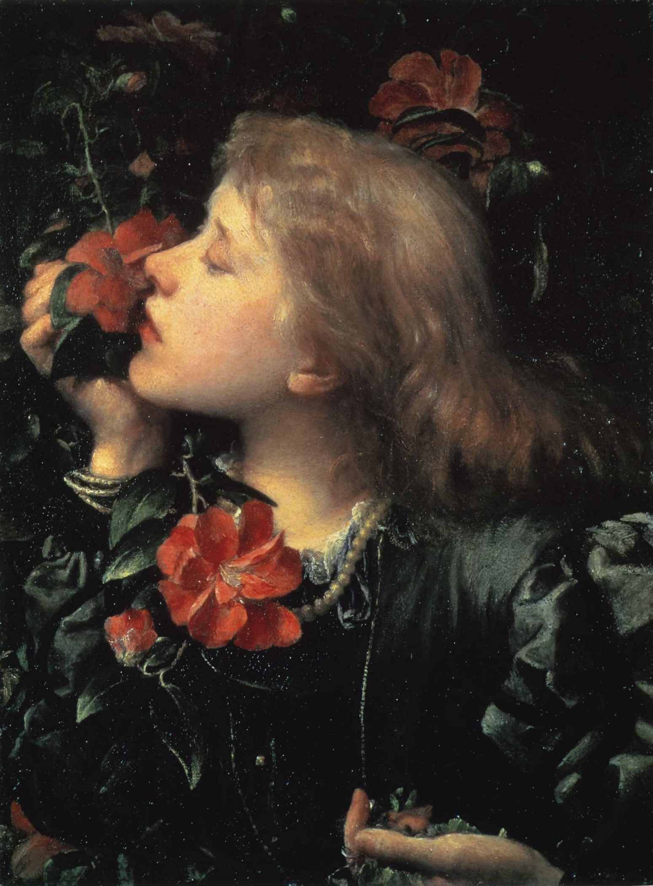

作品名 「選択」
花言葉
スミレ「謙虚」「誠実」「小さな幸せ」
ツバキ「控えめな優しさ」「誇り」
ツバキ
「控えめな優しさ」
椿(ツバキ)は日本原産の植物であり、日本を代表する美しい花木の一つとなっています。光沢のある緑色の厚い葉と、その周囲にある上向きの細かいギザギザが特徴です。椿の花言葉「控えめな優しさ」「謙虚な美徳」は鮮やかな見た目に反し、香りをもたない姿から連想される奥ゆかしい花言葉をもちます。椿の花が散るときには花びらが個々に散るのではなく、花が丸ごとポトリと落ちます。そのことを理由にツバキを嫌って避けることがあります。
選択
ジョージ・
フレデリック・ウォッツ
耽美的な雰囲気漂うこの作品は、ウォッツが妻(エレン)をモデルに描いた寓意的肖像画の中でもとりわけ華麗なものである。婚礼衣装を着たエレンは、一方の手に慎ましいが芳香を放つスミレをのせたまま、もう一方の手で華やかだが香りのないツバキを引き寄せ、虚しくもその匂いをかごうとしている。スミレは家庭の、ツバキは虚栄に満ちた女優の象徴といわれている。
| 作品名 | 選択 |
| 作者 | ジョージ・フレデリック・ウォッツ |
| 制作年 | 1864年 |
| 種類 | キャンバス・油彩 |
| 寸法 | 47cm × 35.5 cm |
| 所蔵 | ロンドン国立肖像画美術館 |